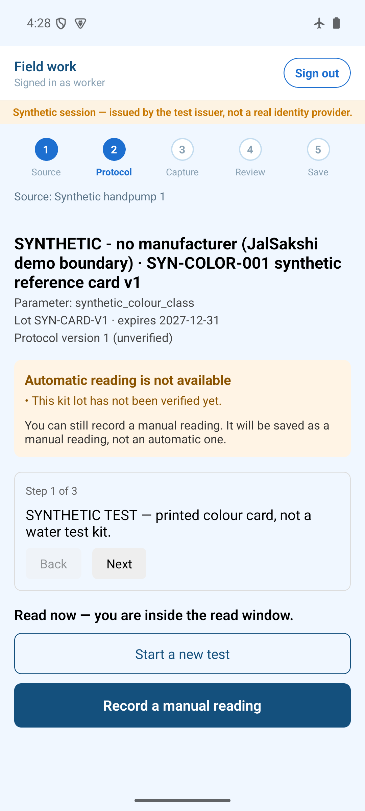
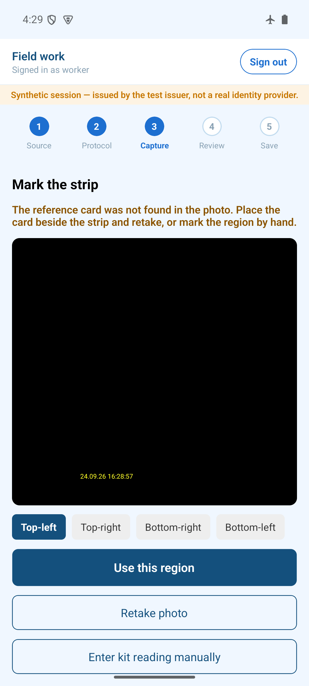
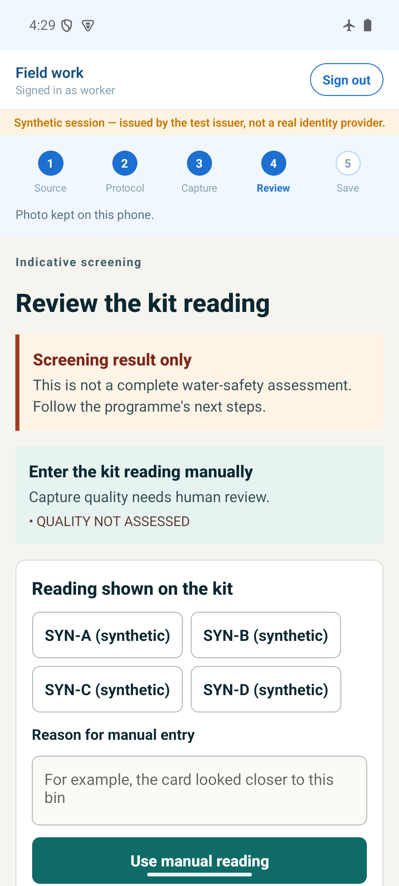
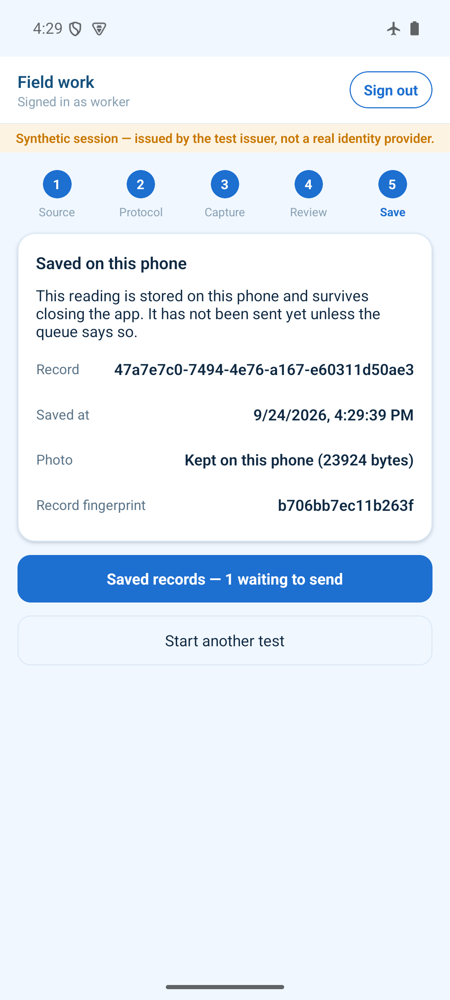
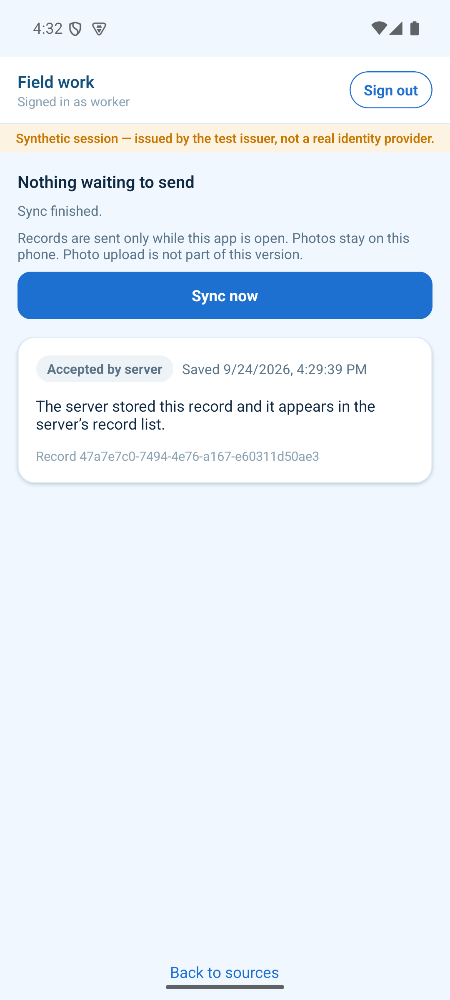

States reported 93.84 lakh water samples tested with field kits in 2024-25[1]. Official policy says an adverse kit result must go to a lab and trigger corrective action. In audited states that often did not happen. Karnataka retested 18% of kit-contaminated samples in 2023-24 and none in the two years before[2]. In Kerala, district labs "did not communicate the test results" to panchayats for remedial action[3].
Residents drinking the water, most of all children and patients: only 72.8% of tap samples at schools, anganwadis and health centres passed microbiological tests (2024)[4]. Also the testers, whose work goes unanswered, and the operators who are answerable when an outbreak follows.
A flagged result has no single owner, deadline or closure rule. It moves on paper, phone calls and portals. Lab reports arrive after 9 to 106 days against a 1–2 day norm[2]. Repairs are not recorded against the result, and residents are often never told.
Each flagged screening becomes exactly one case with an owner and a due date. A lab result counts only after a different person verifies it. The server refuses closure until there is a verified report, a recorded corrective action, a later retest of the same source and a resident communication. Field capture works offline and survives crashes.
Not offline forms (mWater and ODK already do that well) and not phone colour-reading (prior art exists). The difference is evidence rules enforced by default across the whole chain, from screening to resident update. They are tested in code, and the app refuses false certainty. This is a combination claim from a dated desk review, not a claim to be first.
Verified (synthetic) offline capture, idempotent sync, guarded case workflow, resident complaint API, hosted staging, CI. Partial physical-phone runs, real kit, supervisor board UI, resident app screens. Not production-cleared: 10 named blockers[25].
Live at this review: a record captured in airplane mode survives a forced restart and syncs once. Then the server refuses to close its case until the evidence exists. Next: two cold runs on a physical Android phone, a real kit protocol reviewed by a domain expert, and a 50–100 record shadow pilot with one campus operator.
Under Jal Jeevan Mission, trained village volunteers (mostly women) test water with field test kits (FTKs). Those results are indicative screening only: an adverse result must go to a lab for confirmation and then to corrective measures[1]. Each arrow below is a handoff between different people. The red notes are documented breaks.
Water gets contaminated through leaking pipes next to sewers, unclean tanks, failed chlorination and weak treatment. Fixing that takes engineers, money and labs. Software cannot make water safe.
Making sure a warning signal cannot quietly disappear. Every flagged result gets an owner, a lab confirmation, a recorded fix, a retest and a resident update, or stays visibly overdue.
Responsibility is split across the village committee, the engineering department, the lab and the health department. Portals record that a test happened, not that someone closed the loop. There is no rule that stops a problem being marked "done" without proof, and lab and staff capacity is thin.
These are state findings (Karnataka and Kerala, JJM 2019-24), not national estimates. They are the most rigorous public evidence we found on what happens after a test, and both were tabled in early 2026.
JJM guidelines prescribe retesting all contaminated samples. In the seven audited districts, 549 of 910 (60%) were retested in 2023-24. That is a different denominator, and we do not mix the two.[2]
Small purposive sample, so not a prevalence estimate. In five villages the source was clean but household taps were not, which points to contamination during distribution.
The gap is not a lack of testing apps. It is the absence of an owned, time-bound, evidence-checked path from a flag to a fix. That is a workflow and accountability problem, and software can make it visible, assignable and impossible to close falsely. It cannot add lab capacity.
Four documented incidents across a city ward, an apartment complex, a village and a medical-college hostel. We separate confirmed findings from allegations. The last row of each card is our analytical assessment, not a claim that JalSakshi would have prevented the harm.
We name these places to show what is at stake, not to assign blame beyond the cited findings. Death counts differ between official and resident accounts; we report the figures attributed to the cited sources.
All figures below come from the Ministry of Jal Shakti's own data. The functionality assessment is an independent national survey: 19,401 villages and 2,32,691 households, fieldwork July–October 2024 (monsoon), villages already declared "Har Ghar Jal" only[4].
Contaminated water reaches people even where taps exist, and residents cannot see it. So each flagged test matters, and a flag that nobody follows up is a missed warning. We do not extrapolate state audit percentages to India.
The workforce, kits and labs exist, and tests run at crore scale each year. Audits tabled in Feb–Mar 2026 name the weak step precisely. Low-cost Android phones can now store evidence offline and run small models locally: our 896-byte model runs in 1.7 ms on an emulator.
JalSakshi does not need new infrastructure. It wraps the kit test and lab report that already happen, and the most expensive step (lab confirmation) is already funded by the system. What it adds is ownership, deadlines and proof.
Scope: desk review of official product pages and documentation, 21–25 Sep 2026. No hands-on trial of these tools yet. "?" means not verified, not "absent". ● built in · ◐ possible by configuration or partial · ○ not provided.
| Alternative | Type | Works offline in the field | Kit protocol: lot, expiry, read window | Flag opens an owned case with due date | Lab result verified by a second person | Closure blocked without lab + fix + retest + resident update | Resident complaint → same case | Cost to operator |
|---|---|---|---|---|---|---|---|---|
| Paper / WhatsApp + lab | Current manual process | ● | ◐ | ○ | ◐ | ○ | ○ | Low cash, high chasing time |
| JJM-WQMIS portal + app[18][5] | Government system; integration partner | ? | ? | ? | ? | ? | ◐ results shown publicly | Free (government) |
| mWater Surveyor + Workflows[15] | Direct / adjacent competitor | ● | ◐ | ◐ assign, steps, overdue alerts | ◐ | ◐ | ? | Platform free; paid services |
| ODK Collect/Central + Entities[16] | Adjacent; configurable foundation | ● (2024.3+) | ◐ | ◐ case management | ◐ | ◐ | ? | Self-host, or Cloud from USD 199/mo |
| Akvo Caddisfly[17] | Adjacent: phone kit reading | ? | ● | ? | ? | ? | ? | Open source (GPL-3.0) |
| JalSakshi | Our product | ● verified | ● synthetic kit | ● verified | ● verified | ● verified | ◐ API only | Proposed ₹7,500/mo per campus |
mWater and ODK are mature, offline-first and free or cheap, and either can be configured into much of this loop. Phone-based colour reading is prior art (Akvo Caddisfly; peer-reviewed work including fully on-device systems[22][23]). WQMIS is the official record and the right integration target.
Operators who are answerable for a set of sources (campuses, hostels, programmes) but lack a data team to design workflows need a loop that is correct out of the box: evidence rules they cannot skip, screening kept separate from lab confirmation, and residents inside the same record.
Before building further we will run a time-boxed mWater/ODK sandbox trial against the same pilot workflow (team gate T02). If configuration covers it, JalSakshi becomes a capture-and-evidence companion that integrates, rather than a replacement.
| Problem (from p.3) | Capability | User action | Expected operational benefit | Validation method |
|---|---|---|---|---|
| 1 · Results on paper, no kit lot or timing | Protocol-bound capture; lot/expiry check; two-clock read timer; offline receipt | Worker scans source, follows timer, records reading or marks uncertain | Complete, dated, attributable records even without signal | Record completeness in pilot vs paper baseline |
| 2 · Referral has no owner | Flagged sample opens exactly one case; owner and due date | Supervisor assigns and refers to lab | No unowned flags; overdue visible | % flags owned within 24 h; median flag → referral |
| 3 · Lab result slow, unshared or unverified | Lab report recorded; verification by a different person; supersession | Supervisor records; lab reviewer verifies | Only checked results drive decisions; delay is measured | Referral → verified-report days, per lab |
| 4 · Fix not recorded | Corrective-action record with completion evidence | Operator logs chlorination, repair or alternate source | "Done" means something specific | % cases with action evidence |
| 5 · No retest; residents not told | Same-source later retest; communication record; closure guard; complaint intake | Worker retests; supervisor records the notice; residents report and track by reference | No silent closures; residents have a route in | 0 closures without evidence; complaint → case linkage |
Field worker / volunteer: Android app, offline. Supervisor: triage, referral, verification, closure. Lab reviewer: verifies reports. Operator: records fixes. Resident: complaints, status, notices.
A scheduled source test, a kit reading needing review, or a resident's complaint (including an illness report).
JalSakshi does not treat water or certify it potable, and it does not replace lab testing. It will never show "safe to drink". It cannot force staff to act. It makes inaction visible, dated and attributable, and the operator stays accountable.
Illustrative scenario, not a real event: a hostel caretaker tests a rooftop tank on the monthly round, with no signal on the roof. All screens below are genuine Android-emulator captures of JalSakshi v2 using the synthetic test card SYN-COLOR-001. They are not mock-ups, and they are not real water results.





6 · Case & lab. One case opens with an owner. The lab report counts only after a different reviewer verifies it (the recorder gets 403).
7 · Close. The first close attempt is refused and the checklist names the missing resident communication. After a same-source retest and a recorded notice, it closes.
Evidence: tests/e2e/field-case.spec.ts, 8/8 real HTTP steps, team record 25 Sep 2026. The supervisor board is a separate web app.
The worker decides the reading. The supervisor owns triage, referral and closure. A separate lab reviewer verifies, and the operator records the fix. Each step carries a name and timestamp.
A case closes only on complete evidence. Otherwise it stays open with its due date, and overdue cases are listed for the supervisor and the programme lead.
A complaint reference number and status (API built). The public view shows only lab-verified values with lab name and date, never a screening result or "safe to drink".
| Situation | What JalSakshi does | Status |
|---|---|---|
| No network in the field | Saves locally with a receipt; queues; syncs on reopen. Multi-person decisions wait for the server. | Verified (synthetic) |
| Phone killed mid-save | Record is either whole or absent, never half-written. | Verified (synthetic) |
| Response lost, request re-sent | Same content → "duplicate"; changed content → conflict. Never a second case. | Verified (synthetic) |
| Bad photo, missing reference card | Quality gate refuses an automatic reading; retake or manual entry with a reason. | Verified (synthetic) |
| Expired lot, reading outside window, clock tampered | Assisted reading blocked; manual path stays open; timing marked indeterminate. | Partial: synthetic kit |
| Model unsure or wrong | Model is research-only. It abstains, never shows confidence as "safety", and can be disabled remotely (kill switch). | Partial: research |
| Offline lease expired or phone clock rolled back | Access locks; saved records are kept (5 h rollback test: 0 lost). | Verified (synthetic) |
| Someone approves their own lab report | Refused at the API and the database. | Verified (synthetic) |
| Premature closure; two supervisors edit at once | Refused with the missing items named; stale edit gets a version conflict. | Verified (synthetic) |
| Server asleep (free hosting cold start ~1 min) | App survives cold start; field records wait in the queue. Always-on hosting is required before a pilot. | Partial |
| Resident has no smartphone; SMS alert needed | Alerts are queued, not delivered: no SMS, push or IVR provider yet. Printed or notice-board communication is recorded instead. | Roadmap |
Counted from the full matrix in Appendix B (area → feature → user → problem → status → evidence). "Verified (synthetic)" means code exists and passes automated tests and/or emulator runs on synthetic data. Most still owe an independent review.
Ten production blockers are open, including database row-level security (the API uses the table owner), no phone encryption at rest, secrets to rotate, no licence, and an unsigned closure policy[25]. The team's own release review lists them.
| Criterion | Design choice | Trade-off we accept |
|---|---|---|
| Fit with existing work | Wraps the kit test and lab report that already happen. Nothing replaces the lab. In a pilot the old process remains the record of decision (shadow mode). | Double entry during the pilot; value must show within weeks |
| Operating constraints | Android first, offline after provisioning; tiny on-device model (68 parameters, 896 bytes) with no per-image cloud fee; foreground sync instead of unreliable background jobs. | iOS later; multi-person decisions need connectivity |
| Reliability | Crash-safe local store, idempotent sync with content hashes, ordered change feed, rehearsed backup/restore and rollback. | Engineering effort spent on durability, not on dashboards |
| Accountability | Evidence rules live in the server's state machine and database constraints, not in the UI. Every decision has a name, a time and a version. | Stricter than some operators want: the closure policy needs domain sign-off |
| Honesty | Screening is always labelled "indicative". Confidence numbers are never shown. Public status never says "safe". Synthetic data is watermarked. | Less "impressive" output than a model claiming accuracy |
| Interoperability | Versioned OpenAPI contract with a generated client; safe CSV export. No claimed WQMIS integration until permission and an API exist. | Manual export to official portals for now |
| Cost & scale | One modular FastAPI service + PostgreSQL; pilot infrastructure estimated at USD 59–100/month[20]. Measured locally: 10 req/s at p95 50 ms, no lost or doubled records at 50 req/s[25]. | PostgreSQL throughput not yet load-tested |
| Maintenance | No LLM, vector store or microservices. Deterministic rules come first, and the model only where it beats them. CI on every push. | Fewer buzzwords |
A site with three taps and one diligent manager can use a register and a lab. JalSakshi earns its place when there are many sources, several people and residents who need proof.
A tested evidence engine with offline durability, which is the part most teams skip. The code itself can be copied, so it is not a moat on its own.
Validated kit-and-device data, a library of reviewed protocols, operator relationships and a track record that auditors trust. None exists yet. They are earned through pilots.
A 3→8→4 neural network (68 parameters) runs offline on the phone. From the median colour of the marked strip region it suggests one of four bins. It is calibrated, with abstention and a range guard. Status: research only. It was trained on 640 synthetic captures from 128 preparations; on emulator it matches the desktop build on 29/29 checks at 1.7 ms. It is only "not worse" than a nearest-colour baseline (160/160 vs 159/160), and a perfect score on 32 preparations only bounds accuracy above ~89%. In the live flow it never suggests yet, because there is no reference-card locator. Every reading today is human, and a human always decides.[25]
Implemented tenant isolation on all /v1 routes; role separation; self-review block in DB; version conflicts; secret redaction in logs; upload allow-list + PDF quarantine; public views RLS-locked with 0 anon grants; retention purge with deletion ledger; backup/restore and rollback rehearsed; CI.
Planned non-owner DB role + RLS for the API; phone encryption at rest (SQLCipher / Keystore); independent security review; photo object storage with backup; always-on hosting; alert paging.
Known gap: the mobile sync cases (jalsakshi schema) and the resident-layer reports (public schema) are two case models that are not yet bridged. We recommend unifying them before any pilot. Data flow: phone → push (idempotent) → case engine → change feed → phones and board. Evidence photos stay on the phone unless separately authorised.
| Phase | Deliverable | Dependency | Success criterion | Owner |
|---|---|---|---|---|
| Complete | Offline field slice (M1), evidence-to-action case loop API (M2), resident layer API (P1–P13, four items still partial), staging, CI, backup/rollback rehearsal | — | Emulator airplane-mode journey; 8/8 journey test; staging smoke 7/7 | Team (roles A/B/C) |
| This hackathon | 5-minute live story: offline capture → forced restart → sync once → refused closure → evidenced closure | Emulator or phone; staging awake | Every step shown live, or a labelled recording as backup | A (product) |
| Before next review (our suggestion) | Two cold runs on a physical Android phone; a minimal resident-complaint screen wired to the existing API; case timeline on the board | A phone + USB; board app access | Recorded runs with build hash; complaint appears as a case | A / C |
| Before a pilot | Real kit + protocol with a domain reviewer; signed closure policy; RLS + non-owner role; phone encryption; secret rotation; Hindi; licence; always-on hosting; one case model | Lab or domain partner; owner decisions | All 10 blockers in the release review closed with evidence | A + C; domain partner |
| Pilot | Shadow pilot: 50–100 records, one operator, 8–12 weeks | Operator agreement, consent, data ownership | Thresholds on p.14 met; buyer conversation recorded | A |
| Production | Release checklist: backup running, restore rehearsed on production, alerts watched 24 h | Pilot outcome | Owner approval recorded; production smoke passes | C |
| Expansion | Second kit/parameter, validated model on real preparations, SMS/IVR, official export | Real data, providers, permissions | Per-kit evaluation report; leave-phone-out results | B |
Without one we cannot validate a kit or sign a closure policy. Reduce: approach a district PHED lab or university chemistry/microbiology department now. Pick one parameter first. Keep the model research-only until real preparations exist.
Software makes delay visible; it does not create capacity. Reduce: pilot only with an operator who names an owner for follow-up. Measure time to referral and overdue cases, and design escalation with them.
mWater and ODK may cover the workflow. Reduce: run the configure-versus-build trial on the same pilot workflow before more feature work. If configuration wins, pivot to a companion or integration.
Records, flags, cases opened, referrals, verified reports, closures. Measured directly by JalSakshi.
Time to referral, overdue cases, evidence-complete closures, residents informed. Measured directly; needs a baseline.
Fewer exposures and illnesses. Not claimed. Needs external evaluation with health data.
| Per year, at Year-3 deployment | Label | Conservative | Base | Optimistic |
|---|---|---|---|---|
| Deployment (Year-3 customers, Ess / Plus / Prog) | ASM | 10 / 3 / 1 | 25 / 8 / 3 | 50 / 15 / 8 |
| Water sources monitored | ASM | 730 | 2,005 | 4,550 |
| Screening records per year | ASM | 6,360 | 16,860 | 35,400 |
| Flagged results (5%) | ASM | 318 | 843 | 1,770 |
| Flagged results opened as one owned case | TGT | 318 | 843 | 1,770 |
| Followed up at 18% external benchmark | EXT | 57 | 152 | 319 |
| Follow-through target (lab-verified + retest ≤30 days) | TGT | 50% | 75% | 90% |
| Additional documented follow-ups vs benchmark | TGT | 102 | 481 | 1,274 |
Formula: records = Σ customers × sources × tests/year; flagged = records × 5%; follow-ups = flagged × follow-through rate. The 18% benchmark is Karnataka's 2023-24 retest rate[2], a different context. Our real baseline must be measured in the pilot's shadow period.
| Baseline | 4 weeks of shadow logging of the current process at the same sources: flags, referral dates, report dates, actions, notices |
| Period | 8–12 weeks, 50–100 records, one operator, sources they already test |
| Metrics | % flags owned ≤24 h · median flag → referral (days) · referral → verified report (days, per lab) · % flagged with verified report + retest ≤30 days · closures without evidence · records needing correction |
| Thresholds TGT | ≥95% owned ≤24 h · referral ≤2 days median · ≥75% follow-through · 0 evidence-less closures · <5% corrections |
| Reported with | Missing data, season, worker experience, kit lot; no causal claim from an uncontrolled before/after |
| Segment | Need | Willing to pay | Ability to adopt | Sales cycle | Setup burden | Rank |
|---|---|---|---|---|---|---|
| Residential campuses (universities, hostels, residential schools) | High: own tanks, answerable to students and parents | Medium: facilities budget | High: one decision-maker | 1–3 months | Low | 1 |
| NGO / implementation partners running village surveillance | High: donor reporting | Medium: programme or CSR budgets | Medium: field training | 3–6 months | Medium | 2 |
| Private testing labs | Medium: client portal | Medium | High | 1–3 months | Low | 3 (channel) |
| Housing societies / RWAs | Medium–high after incidents | Low: fragmented | Medium | Variable | Low | 4 |
| State PHED / district missions | High | High but slow | Low: WQMIS exists | 12+ months, tender | High | Later: integrate, don't compete |
Rankings are our judgement from the evidence, not buyer interviews. No buyer, customer or willingness-to-pay figure exists yet.
End users: caretakers, estates staff, supervisors. Beneficiaries: students, staff, residents. Paying customer: the institution. Budget owner: estates / facilities or the hostel warden's office. Procurement: registrar or purchase committee, often under a threshold for annual software. Residents never pay, and we never sell data.
It gets proof for parents, regulators and accreditation visits that every flagged tank was followed up. It gets fewer hours spent chasing labs and contractors, a resident channel that surfaces problems early, and a dated record if something goes wrong. The incidents on p.5 show the reputational and human cost of a known problem left unowned.
Free alternatives; extra work for caretakers; fear of creating a written record of problems; no lab contract in place; data-protection review.
Ask 10 campus facilities heads for their current annual water-testing spend and staff time. Offer the pilot free, then quote a paid annual plan and record yes/no/why. Success = 2 signed letters of intent at the quoted price.
Value and cost scale with the number of water sources monitored, not with users. Per-user pricing would penalise adding residents and volunteers, which is exactly who we want in the system.
45,473 colleges registered (AISHE 2021-22)[19] × 30% residential with their own storage ASM = 13,642 × 10% reachable in 2–3 states in three years ASM = 1,364 campuses. At the Essentials price that is a ₹12.3 crore a year ceiling, not a forecast. The base Year-3 campus count is 2.4% of it. NGO programmes, labs and schools are not added, because their counts are unverified.
| Tier | Target customer | Included value | Billing unit | Indicative price (excl. GST) | Support burden | Expansion path |
|---|---|---|---|---|---|---|
| Validation pilot | Operator new to JalSakshi | One site, ≤25 sources, 8–12 weeks shadow use, training, baseline report | Per pilot | ₹0 (first two); later ₹25,000 credited on conversion | High (founder-led) | Converts to Essentials |
| Campus Essentials | Single campus / hostel group, residential school | Case workflow, offline field app, lab-report verification, resident complaint intake, exports | Per site / year | ₹7,500/mo (₹0.9 L/yr) + ₹30,000 setup | Email, next business day | More sources → Plus |
| Campus Plus | Large or multi-block campus, hospital | Up to ~100 sources, lab-partner accounts, multiple supervisors, priority support | Per site / year | ₹18,000/mo + ₹60,000 setup | Priority, 4 business hours | Group / multi-campus |
| Programme | NGO / implementation partner running village surveillance | Cluster up to ~300 sources, field-team offline leases, programme dashboards & exports | Per programme cluster / year | ₹30,000/mo + ₹75,000 setup | Named contact, field refresher | More clusters / districts |
Anchors: ODK Cloud Standard USD 199/mo ≈ ₹19,104[16][21] (Essentials = 39% of it); mWater is free with paid services[15]. Outside subscription: setup (one-time), training ₹15,000/day, integration (quoted), SMS/tags at cost (not modelled). Grants and prizes are never counted as revenue.
| Conservative | Base | Optimistic | |
|---|---|---|---|
| Year 1 (Oct 2026 – Sep 2027; paying starts from month 7) | |||
| Paying customers at year end (Ess / Plus / Prog) | 2 / 0 / 0 | 3 / 1 / 0 | 5 / 1 / 1 |
| Recognised revenue (subscr. + setup) | ₹1.0 L (0.4 + 0.6) | ₹2.9 L (1.4 + 1.5) | ₹6.0 L (3.1 + 2.9) |
| Direct delivery cost (infra, hosting, onboarding) | ₹1.8 L | ₹2.3 L | ₹3.4 L |
| Gross profit (margin) | −₹0.8 L (-82%) | ₹0.6 L (22%) | ₹2.6 L (44%) |
| Operating expenses (founders unpaid) | ₹7.2 L | ₹7.2 L | ₹7.2 L |
| Operating result, founders unpaid | −₹8.0 L | −₹6.6 L | −₹4.6 L |
| ARR at end of Year 1 (MRR × 12) | ₹1.8 L | ₹4.9 L | ₹10.3 L |
| Year 3 (Oct 2028 – Sep 2029; salaried team) | |||
| Customers at start → end (all tiers) | 6 → 14 | 16 → 36 | 29 → 73 |
| Gross new customers (incl. churn) | 9 | 22 | 47 |
| Recognised revenue (subscr. + setup) | ₹16.6 L (12.9 + 3.8) | ₹44.7 L (35.7 + 9.0) | ₹93.3 L (74.0 + 19.4) |
| Direct delivery cost (incl. customer success) | ₹10.4 L | ₹21.2 L | ₹37.6 L |
| Gross profit (margin) | ₹6.2 L (38%) | ₹23.5 L (53%) | ₹55.7 L (60%) |
| Operating expenses | ₹41.0 L | ₹59.0 L | ₹81.0 L |
| Operating result | −₹34.8 L | −₹35.5 L | −₹25.3 L |
| ARR at end of Year 3 | ₹19.1 L | ₹50.6 L | ₹106.2 L |
| Break-even customers (Year-3 mix & costs) | ≈ 42 | ≈ 58 | ≈ 77 |
Year-1 revenue (₹2.9 L base) is far below year-end ARR (₹4.9 L), because customers start mid-year. Year 1 looks small only because founders are unpaid; paying each of three founders ₹5 L would make the base result −₹21.6 L. In Year 3 the base case earns ₹44.7 L at 53% gross margin, and its operating result is still −₹35.5 L. It needs about 58 customers at the Year-3 mix and costs (it has 36). Each extra base-mix customer adds about ₹1.1 L a year of contribution.
Ideal customer: a residential university or hostel group with 15–40 tanks, taps and filters, and an estates office that already pays for lab tests. Scope: one parameter, one kit, 8–12 weeks in shadow mode. Decision-maker: estates head or registrar. Onboarding: source QR tagging, a half-day training, a named follow-up owner. Conversion: the baseline-versus-pilot report, then an annual Essentials quote. Expansion: more blocks, then Plus; sister campuses.
University estates and facilities networks; district or private NABL labs (as referral partners and channel); NGOs working with Pani Samitis under JJM; campus incubators. Hackathon incubation support would be a grant, not revenue.
Annual software approvals, data-protection review, and reluctance to create written records of problems. Mitigations: a low annual price under common purchase thresholds, a data-ownership clause and an export-anytime guarantee.
Show now: sign in against the hosted API; airplane-mode capture; kill and reopen; sync once (duplicate refused); bad capture → manual reading; server refuses closure, naming the missing evidence; evidenced closure. Judges should notice: the refusal, the single record after a retry, and the "screening only" wording. If a dependency fails: offline steps need no network; server steps fall back to a labelled recording of the 8-step journey. Never a fabricated result.
Not interface-only: real persistence, real server guards, real sign-in and CI tests, all verifiable in the repository.
| Official criterion[24] | Where this document answers it | Strongest evidence | Honest limit |
|---|---|---|---|
| Innovation | p.7, p.8, p.11 | Evidence-enforced closure + protocol-bound, uncertainty-aware capture + resident channel, in one tested system | Combination claim; ingredients have prior art |
| Technical execution | p.9, p.10, p.12 | Crash-safe offline store, idempotent sync, guarded state machine, on-device model, hosted staging, CI | Emulator only; independent review owed |
| Feasibility | p.11, p.13, p.16 | Small stack, estimated USD 59–100/month pilot infrastructure; named blockers with owners | No kit, lab or operator partner yet |
| Impact | p.3–6, p.14 | Government audits and survey data; measurable pilot metrics | No field data; no health claim |
| Presentation (theme: Project to Product) | p.15–17 | Buyer, pricing unit, break-even and pilot path | Pricing and willingness to pay unvalidated |
In audited Karnataka, most kit-flagged samples were never re-checked. In Kerala, panchayats were never told. In Indore, Kochi, Chitradurga and a Hyderabad hostel, warnings came before the illness. Each unowned flag is a warning that someone saw and nobody acted on.
A flagged result that cannot disappear. It has an owner and a date. It closes only on a verified lab result, a recorded fix, a retest and a told resident, or it stays visibly overdue. Honest about uncertainty, and working without a signal.
The weakest link is documented by the state's own auditors. The workforce, kits and labs already exist. The hard engineering (durability, sync, evidence rules) is built and tested. What is missing is real-world proof, and a pilot can supply it cheaply.
JalSakshi: the witness (sakshi) that makes sure a warning about water is followed through.
| Feature | User | Problem addressed | Status | Evidence or planned validation |
|---|---|---|---|---|
| Field app | ||||
| Staff sign-in (Supabase Auth, ES256 verified) | Worker, supervisor | Only authorised people create records | Verified (synthetic) | Emulator sign-in against staging, app v2.2 (screenshot); provider tests |
| Source catalogue: search, QR allow-list, source history | Worker | Test is tied to the right source | Verified (synthetic) | 43 Python + 22 Node tests; 10 hostile QR payloads rejected; emulator screens. Independent review owed |
| Kit protocol, lot/expiry eligibility, read-window timer (two-clock) | Worker | Results read outside the kit's window or with expired reagents | Partial | 39 Node tests; runs on synthetic SYN-COLOR-001 only; no real kit yet |
| Guided capture with region marking | Worker | Unusable or unverifiable photos | Partial | Emulator only; reference-card locator missing; physical phone pending |
| Deterministic capture-quality checks and retake path | Worker | Guessing from bad photos | Verified (synthetic) | Fixtures 8/8, Kotlin 4/4; thresholds provisional |
| Manual reading with provenance, 'screening result only' wording | Worker | False certainty; screening mistaken for a lab result | Verified (synthetic) | 12/12 review tests; wording tests; screenshots |
| On-device model suggestion with calibrated abstention | Worker | Reading variability | Partial | Research only: 68-parameter MLP, 896 B; 29/29 emulator parity, 1.7 ms median; synthetic data; not used in live flow |
| Crash-safe offline save with local receipt | Worker | Records lost when phones die or restart | Verified (synthetic) | Fault injection at commit boundaries; emulator kill -9 in airplane mode |
| Idempotent sync and ordered pull | Worker, supervisor | Duplicates and lost updates after reconnecting | Verified (synthetic) | Lost-response replay = duplicate, 1 row; PostgreSQL concurrent replay; emulator reconnect |
| Offline access lease, clock-rollback lock, revocation | Programme admin | Lost/stolen phones keep access offline | Verified (synthetic) | Emulator: 5 h clock rollback locked access, 0 records lost |
| Encryption at rest on the phone | All | Data exposure on a lost phone | Roadmap | Production blocker (T32); design choice pending |
| Hindi interface, TalkBack pass | Worker, resident | Language and accessibility barriers | Roadmap | T28 not started; static a11y fixes done |
| Case workflow | ||||
| Exactly one case per flagged sample | Supervisor | Flags that nobody owns | Verified (synthetic) | State-machine tests; journey step 3 |
| Owner, lab referral, due date, overdue visibility | Supervisor | No deadline, no accountability | Verified (synthetic) | Case API tests (T17/T18), PostgreSQL race x5 |
| Lab report recorded, then verified by a different person | Supervisor, lab reviewer | Unverified or self-approved results | Verified (synthetic) | Self-review refused at API and DB layer; journey step 5 |
| Corrective action with completion evidence | Operator | 'Fixed' with no proof | Verified (synthetic) | 7/7 focused tests |
| Same-source, later retest linked to the case | Worker, supervisor | Closing without re-checking | Verified (synthetic) | g_retest guard tests |
| Resident communication record (never a delivery claim) | Supervisor | Residents never told | Verified (synthetic) | T22 tests; journey step 7-8 |
| Evidence-checked closure with named missing items | Supervisor | Premature closure | Verified (synthetic) | Closure refused until verified report + action + retest + communication; closure policy awaits domain sign-off |
| Metrics and CSV export (formula-injection safe) | Programme lead | No view of overdue and repeat problems | Partial | 14/14 tests; single-process job store |
| Supervisor web board | Supervisor | Needs a screen, not an API | Partial | API + CORS here; board is a separate app |
| Feature | User | Problem addressed | Status | Evidence or planned validation |
|---|---|---|---|---|
| Resident layer | ||||
| Resident account (phone + password, lockout, forced change) | Resident | Anonymous, untraceable complaints | Partial | HTTP 12/12; phone ownership unverified (no SMS provider) |
| Complaint with reference number, rate limit; illness report alerts supervisors | Resident, supervisor | Complaints that go nowhere | Partial | Verified against the live database; no app screen yet; alert delivery not connected |
| Complaint linked to a case; +status lookup | Resident, supervisor | No feedback to the person who reported | Partial | review_complaint API; IVR intake needs telephony provider |
| Public source status (fuzzed location, never 'safe to drink') | Resident | False reassurance; privacy | Partial | API verified, map refresh by pg_cron observed; app portal shows demo fixtures |
| Points, rewards, sponsor redemptions, leaderboard | Resident, sponsor | Low reporting participation | Partial | Atomic, race-safe redemption proven; no app screen |
| Platform | ||||
| Tenant isolation across every /v1 route | All | One customer seeing another's data | Verified (synthetic) | Route matrix; cross-tenant ids look like missing ids. Blocker: API uses table-owner role, RLS off |
| Safe logging, request tracing, alert runbook | Operator | Leaked secrets; silent failures | Partial | Injected secrets never logged; alerts not wired to paging |
| Retention with deletion ledger that survives restore | Operator | Over-retention of photos and data | Verified (synthetic) | Interrupted purge resumes; restore reapplies deletions |
| Backup/restore, rollback with outbox replay, model kill switch | Operator | Unrecoverable failures | Partial | Rehearsed on staging; photo backup and scheduled dump missing |
| CI and hosted staging | Team | Regressions | Verified (synthetic) | CI green; staging smoke 7/7; /health/ready 200 on 25 Sep 2026 |
| Demo | ||||
| 5-minute live story: offline capture → refused closure → evidenced closure | Judges | Show the claim, not screens | Hackathon | Team demo plan; synthetic data visibly labelled |
| Roadmap | ||||
| Real kit protocol with domain reviewer; signed closure policy | Programme | Scientific and policy validity | Roadmap | T01/T46; needs a lab/domain partner |
| Validated kit-specific model on real preparations | Worker | Reading variability | Roadmap | T23-T27 on independent preparations, leave-phone-out tests |
| SMS / push / IVR delivery | Resident | Residents without the app | Roadmap | Providers B2-B4 not chosen |
| Shadow pilot and production release | Operator | Real-world proof | Roadmap | T38 protocol drafted; T39 checklist; 10 open blockers |
| Proposed | ||||
| Light shield; signed printable case receipt; kit-lot drift warning; voice instructions | Worker, resident | Capture quality, literacy, trust | Proposed | Team's own E01-E05, explicitly not committed |
| Lab turnaround tracker (referral → verified report, per lab) | Programme lead | Audits found 9-106 day delays | Proposed | Our suggestion; data already captured by case timestamps |
| Bridge the two case models (mobile-sync cases and v2 reports) | Team | Two parallel case records | Proposed | Our engineering recommendation before pilot |
Source for every row: the team repository as of 25 Sep 2026 (current-state record, release evidence index, handoffs, tests)[25]. Test counts are the team's recorded results; the author of this document did not re-run suites that write to the live database.
| Input | Value | Label | Rationale / evidence |
|---|---|---|---|
| USD→INR | ₹96 | ASM | FBIL reference 95.725 (11 Sep 2026), spot ~95.96 (25 Sep 2026), rounded |
| Campus Essentials price | ₹7,500/month, billed yearly | ASM | Hypothesis; ~39% of ODK Cloud Standard (USD 199 ≈ ₹19,104/month); mWater platform is free, so price must be justified by enforced workflow + service |
| Campus Plus price | ₹18,000/month | ASM | Hypothesis; larger campuses, lab-partner accounts, priority support |
| Programme price | ₹30,000/month | ASM | Hypothesis; NGO / implementation-partner cluster up to ~300 sources |
| Setup fees | ₹30,000 / ₹60,000 / ₹75,000 | ASM | Source registration, QR tags, training day(s) |
| Onboarding delivery cost | ₹15,000 / ₹30,000 / ₹60,000 per new customer | ASM | Staff days + travel + tags |
| Variable hosting/storage per customer | ₹600 / ₹1,500 / ₹3,000 per month | ASM | Photos, backups, egress; SMS excluded (not built; would be pass-through) |
| Shared platform infrastructure | ₹12,000/month Y1; ₹20k / 30k / 50k Y3 | ASM | Repo cost register: USD 59/month pilot baseline, USD 70-100 provisional allowance; Supabase Pro USD 25; doubled for staging + backups |
| Year 1 opex (all scenarios) | ₹7.2 L | ASM | Tools/legal/company ₹1.5 L, sales travel ₹1.5 L, kit + lab validation ₹2.0 L, independent security review ₹1.5 L, two free pilots ₹0.7 L |
| Founder pay, Year 1 | ₹0 (headline); ₹15 L sensitivity | ASM | Disclosed: unpaid founders flatter Year 1 |
| Founder pay, Year 3 | ₹9 L each × 3 | ASM | Sustainable staffing assumed from Year 3 |
| Customer success staffing | ₹4.8 L per 25 customers | ASM | Counted as direct delivery cost |
| Annual churn | 20% / 15% / 10% | ASM | No renewal data exists |
| Flag rate (records needing follow-up) | 5% | ASM | Orientation: 1.4-3.0% FTK-contaminated (Karnataka 2021-24, CAG) and 24% of household taps failing lab microbiology (FA 2024) |
| Baseline follow-through | 18% | EXT | Karnataka 2023-24: 559 of 3,078 FTK-contaminated samples retested (CAG). Different context; our baseline must be measured in the pilot |
| Follow-through target | 50% / 75% / 90% | TGT | Share of flagged results with verified lab result + retest within 30 days |
| Sources and test frequency | 25 / 60 / 300 sources; monthly / monthly / quarterly | ASM | Per tier; to be replaced by pilot data |
| Residential share of colleges | 30% | ASM | Not sourced; used only for the reachable-market illustration |
| Reachable geography share | 10% | ASM | Direct sales in 2-3 states within three years |
MRR = monthly recurring subscription revenue. ARR = MRR at a stated date × 12. Recognised revenue = subscription earned in the year (month-by-month in Year 1; linear build between start and end counts in Year 3) + setup fees. Gross profit = revenue − direct delivery costs (infrastructure, per-customer hosting, onboarding, customer success). Operating result = gross profit − operating expenses. Break-even = (opex + fixed infrastructure) ÷ annual contribution per customer at the Year-3 mix.
| Claim | Ref | Unit / denominator | Geography | Limitation | Used |
|---|---|---|---|---|---|
| 93.84 lakh FTK tests in 2024-25; 47.59 lakh in 2025-26 (to 12 Mar 2026); 24.80 lakh women trained (cumulative) | [1] | Water samples tested with FTKs; women trained, cumulative | India, rural (JJM) | State-reported to WQMIS; 2025-26 is a partial year, not a decline | Exec, p6 |
| FTK results are indicative screening; adverse results need lab confirmation and corrective measures | [1] | Policy statement | India (JJM) | Describes the rule, not compliance with it | p3, p8 |
| Karnataka: 0 of 4,540 (2021-22), 0 of 7,909 (2022-23) and 559 of 3,078 (2023-24) FTK-contaminated samples retested (18%) | [2] | Retested / contaminated FTK samples | Karnataka, state totals | State-level; one state; 7-district sample shows 549 of 910 (60%) retested in 2023-24 - different denominator | Exec, p4 |
| Karnataka: lab turnaround 9-75 days (all 79 labs), 71-106 days (4 private empanelled) vs 24 h chemical / 48 h bacteriological norm | [2] | Days, sample receipt to report | Karnataka labs | Ranges, not medians | p4 |
| Karnataka: remedial action not taken for 52% of contaminated samples (IMIS) | [2] | Share of contaminated samples | Karnataka | Period of IMIS chart not stated in text | p3 |
| Karnataka: audit's own tests met the standard in only 2 of 28 test-checked villages | [2] | Villages | 28 villages in 7 districts | Small purposive sample | p4 |
| Kerala: district labs did not communicate results to District/Gram Panchayats for remedial action; WQMIS formats WQ1-6 lacked sampling date, report date, location and remedial action taken | [3] | Qualitative audit finding | Kerala, test-checked districts | Government disputes; says data uploaded to WQMIS | Exec, p3, p4 |
| Kerala: average district-lab turnaround 45 / 40 / 33 days (Kozhikode / Kollam / Palakkad) | [3] | Days | 3 test-checked districts | Government claims testing within norm; no records furnished | p4 |
| 76.0% of household tap samples passed microbiological tests; 72.8% at public institutions; 92.4% of households satisfied with quality; FTKs in 27.2% of villages; VWSC in 55.2% | [4] | Weighted % of samples / households / villages | 19,401 Har Ghar Jal villages, 761 districts | Monsoon fieldwork (Jul-Oct 2024); only HGJ villages; third-party NABL lab | Exec, p6 |
| 2,870 water-quality testing labs (as on 4 Feb 2026); Citizen Corner shows village-level results | [5] | Labs | India | Count, not capacity or turnaround | p6, p7 |
| Indore Bhagirathpura: 36 deaths reported 26 Dec 2025 - 25 Feb 2026; judicial commission reportedly linked 24 to sewage-contaminated municipal supply; six officials held responsible | [6] | Deaths | Bhagirathpura, Indore | Commission report confidential; findings reported via lawyers | p5 |
| Indore: complaints to municipal helpline reportedly unattended for days from 25 Dec 2025 | [8] | Qualitative | Bhagirathpura | Residents' accounts; not an official finding | p5 |
| Kochi DLF: 441 residents ill in two weeks (health dept); lab report dated 29 May showed E. coli; residents allege it was not shared until 13 Jun | [10] | People ill | One apartment complex, Kakkanad | Disclosure delay is an allegation | p5 |
| Chitradurga Kavadigarahatti: 4 of 5 water samples unfit; Vibrio cholerae found; tank served 220 houses; 5-6 deaths reported | [12] | Samples; deaths | One village | Death toll varied by report; cause of contamination disputed | p5 |
| Gandhi Medical College hostel: 30+ of ~300 UG students ill; students say they had raised the tank issue earlier | [14] | Students ill | One campus | Student account; lab results not reported in source | p5 |
| mWater Workflows support assignment, steps, automations and overdue alerts; platform free to end users; fees for services | [15] | Product capability | Global | Documentation read; no hands-on trial | p7 |
| ODK Entities support longitudinal case management; offline entity updates need Collect/Central 2024.3+; ODK Cloud Standard USD 199/mo | [16] | Product capability, price | Global | Documentation read; no hands-on trial | p7, p16 |
| 45,473 colleges registered (AISHE 2021-22) | [19] | Colleges | India | Not all residential; residential share is an assumption | p15 |
The full ledger, with publisher, publication date and data period in separate columns, is delivered as jalsakshi-source-and-assumptions-ledger.md. IndiaSpend's Feb 2026 analysis repeats the FA-2024 figures, so it is not cited as independent corroboration.